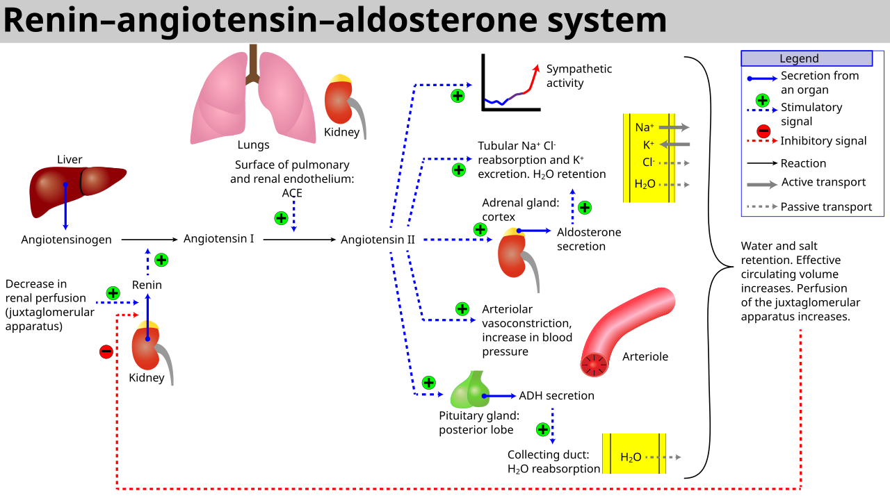

💪 Sức khỏe Nam giới
Nutrition — Hydration & Exercise PerformanceDeep dive⏱ 8 phút đọc
Bù Nước & Hiệu Suất Thể Lực: Ảnh Hưởng Của Mất Nước 2% Lên Thể Tích Huyết Tương & Nhịp Tim
Nhiều người chỉ uống nước khi bắt đầu cảm thấy khát khô cổ họng, nhưng trong sinh lý học thể thao, cảm giác khát là một tín hiệu báo động đã quá muộn. Hướng dẫn vị trí chính thức của Hiệp hội Y học Thể thao Hoa Kỳ (ACSM) cảnh báo: Tình trạng mất nước chỉ tương đương 2% trọng lượng cơ thể đã làm giảm tới 15% hiệu suất vận động cơ bắp, khiến nhịp tim tăng vọt bất thường và đẩy nồng độ hormone dị hóa cortisol lên mức đỉnh điểm.
Mất nước 2% làm giảm thể tích huyết tương, khiến máu bị cô đặc và giảm thể tích tống máu của tim (Stroke Volume). Để bù lại, tim phải đập thêm 3–7 nhịp mỗi phút (Cardiac Drift) cho cùng một cường độ vận động. Hãy uống 35–45ml nước/kg thể trọng mỗi ngày và bổ sung 500mg Natri kèm điện giải trong các buổi tập kéo dài trên 60 phút.
Hiện Tượng "Trôi Dạt Tim Mạch" (Cardiac Drift): Khi Máu Bị Cô Đặc
Khi bạn tập luyện thể thao hoặc làm việc ngoài trời, cơ thể tiết mồ hôi để làm mát bề mặt da qua cơ chế bay hơi. Nguồn nước để tạo ra mồ hôi được rút trực tiếp từ lòng mạch máu—chính là Thể Tích Huyết Tương (Plasma Volume):
1. Khi thể tích huyết tương sụt giảm do mất nước: Máu bị cô đặc lại (tăng độ nhớt máu), làm giảm lượng máu tĩnh mạch đổ về tim vào cuối thì tâm trương.
2. Thể tích máu tống ra trong mỗi nhát bóp của tim (Stroke Volume) bị sụt giảm từ 10% đến 15%.
3. Để duy trì đủ cung lượng máu (Q = Stroke Volume × Heart Rate) nuôi não bộ và các nhóm cơ đang vận động, nút xoang nhĩ buộc phải phát xung nhanh hơn. Kết quả là nhịp tim bị trôi dạt tăng vọt (Cardiac Drift) thêm 5 đến 10 nhịp/phút dù tốc độ chạy hoặc mức tạ của bạn không hề tăng lên!
Trên ứng dụng thiết bị đeo (Apple Watch, WHOOP), bạn sẽ thấy mình nhanh chóng bị đẩy từ Zone 2 sang Zone 4 nguy hiểm, kèm theo điểm Day Strain tăng chóng mặt và cảm giác kiệt sức xuất hiện sớm hơn 30 phút.

📊 Sơ đồ y khoa: Hệ thống Renin-Angiotensin-Aldosterone (RAAS): Bù nước đúng cách ngăn ngừa co thắt mạch máu thận, duy trì thể tích tống máu tim và sức bền vận động. Nguồn sơ đồ: Wikimedia Commons ↗
Bảng Nấc Thang Suy Giảm Thể Lực Theo Mức Độ Mất Nước (Dehydration Ladder)
Dữ liệu thực nghiệm từ Hiệp hội Y học Thể thao Hoa Kỳ (Sawka et al., ACSM Position Stand):
% Trọng Lượng Cơ Thể Bị Mất
Tương Đương Lượng Nước Mất (Người 75kg)
Tác Động Sinh Lý Học Thần Kinh & Cơ Bắp
Biểu Hiện Trên Thiết Bị Đeo & Vận Động
1% Mất Nước
~0.75 Lít nước
Bắt đầu kích hoạt cảm giác khát nhẹ; thân nhiệt cơ sở nhích tăng 0.2°C.
Thể tích huyết tương giảm; sức bền giảm 10%–15%; giảm khả năng tập trung thùy trán.
Hiện tượng Cardiac Drift rõ rệt; nhịp tim tăng +5 bpm tại cùng pace chạy.
3% Mất Nước
~2.25 Lít nước
Giảm 20% sức mạnh bùng nổ 1RM; giảm lưu lượng máu đến da làm da nóng bừng.
Thời gian phục hồi cơ bắp kéo dài; HRV ban đêm sụt giảm sâu.
4% – 5% Mất Nước
~3.0 – 3.75 Lít nước
Chuột rút cơ bắp dữ dội; đau đầu; hoa mắt; nguy cơ kiệt sức vì nhiệt (Heat Exhaustion).
Thiết bị đeo cảnh báo nhịp tim bất thường; sụp đổ thể lực hoàn toàn.
Nước Lọc Là Chưa Đủ: Tầm Quan Trọng Của Chất Điện Giải (Natri & Kali)
Một sai lầm nguy hiểm phổ biến là: Uống hàng lít nước tinh khiết đóng chai khi đang đổ mồ hôi đầm đìa.
- Khi toát mồ hôi, cơ thể không chỉ mất nước mà còn mất một lượng lớn muối khoáng, đặc biệt là Natri (Sodium)—trung bình khoảng 800–1.200mg Natri cho mỗi lít mồ hôi.
- Nếu bạn chỉ nạp nước lọc không có muối vào dạ dày, nồng độ natri trong máu sẽ bị pha loãng cấp tính, dẫn đến tình trạng Hạ Natri Máu (Hyponatremia). Tế bào sẽ hút nước vào trong và phình to lên, gây chóng mặt, buồn nôn, lú lẫn và thậm chí co giật.
- Muối Natri chính là chất điện giải tạo áp suất thẩm thấu kéo nước từ ruột vào tuần hoàn máu. Không có muối, nước bạn uống sẽ chỉ đi thẳng xuống bàng quang và bị thải ra ngoài qua nước tiểu sau 20 phút mà không hề hydrate hóa tế bào.
Giao Thức 4 Bước Hydrate Hóa Tối Ưu Cho Nam Giới Vận Động
Uống 500ml Nước Kèm Chút Muối Khoáng Khi Thức Dậy: Sau 7–8 tiếng thở ra hơi nước trong đêm, cơ thể bạn đang ở trạng thái mất nước tự nhiên từ 1–1.5%. Uống nửa lít nước ấm kèm một nhúm muối hồng Himalaya ngay khi rời giường giúp kích hoạt nhu động ruột và khôi phục thể tích máu tức thì.
Quy Tắc "Cân Trước & Sau Tập": Cân trọng lượng cơ thể trước và ngay sau buổi tập nặng. Cứ mỗi 0.5kg trọng lượng giảm đi, hãy bù lại 600–750ml nước có chứa điện giải trong 2 giờ tiếp theo.
Thêm 500–800mg Natri Cho Các Buổi Tập > 60 Phút: Bổ sung gói điện giải chứa Natri, Kali và Magie vào bình nước thể thao khi tập luyện trong thời tiết nóng ẩm hoặc các bài tập sức bền kéo dài.
Kiểm Tra Màu Sắc Nước Tiểu (Pee Chart): Màu nước tiểu là chiếc gương đo độ hydrate hóa chính xác nhất:
- Màu vàng rơm nhạt (Vùng an toàn): Cơ thể đủ nước hoàn hảo.
- Màu vàng sẫm hoặc màu nước trà (Báo động đỏ): Mất nước nghiêm trọng, cần bù nước và điện giải ngay lập tức.
- Màu trắng hoàn toàn trong suốt: Đang uống quá nhiều nước lọc, thận đang phải làm việc quá tải để thải nước thừa.
Tài Liệu Tham Khảo & Nguồn Y Khoa
Sawka, M. N., Burke, L. M., Eichner, E. R., et al. (2007).American College of Sports Medicine position stand: Exercise and fluid replacement. Medicine and Science in Sports and Exercise, 39(2), 377–390. Tạp chí Sports Medicine (PMID: 17277604) ↗
Judelson, D. A., Maresh, C. M., et al. (2007).Hydration and muscular performance: does fluid balance affect strength, power and high-intensity endurance? Sports Medicine, 37(10), 907–921. Tạp chí Sports Medicine (PMID: 17887814) ↗
Cheuvront, S. N., & Kenefick, R. W. (2014).Dehydration: physiology, assessment, and performance effects. Comprehensive Physiology, 4(1), 257–285. Tạp chí Wiley ↗
📚
Nguồn Tham Khảo Y Khoa & Nghiên Cứu Gốc
Bài viết này được tổng hợp và kiểm chứng từ các nghiên cứu y sinh học, hướng dẫn lâm sàng và tài liệu khoa học thiết bị đeo của Medicine & Science in Sports & Exercise (ACSM Position Stand) & Sports Medicine.
💪 Men's Health
Nutrition — Hydration & Exercise PerformanceDeep dive⏱ 8 min read
Hydration Dynamics: How a 2% Body Water Deficit Spikes Heart Rate & Derails Muscle Work
Most men wait until profound dry-mouth thirst strikes before reaching for water, but in exercise physiology, thirst is a notoriously delayed lagging indicator. The American College of Sports Medicine (ACSM) clinical position stand emphasizes that hypohydration of merely 2% body mass slashes aerobic and strength work capacity by up to 15%, elevates cardiovascular strain via cardiac drift, and spikes catabolic cortisol.
A 2% water deficit contracts intravascular plasma volume, concentrating blood and slashing ventricular stroke volume. To maintain cardiac output, the heart must beat 3–7 bpm faster (cardiac drift) at identical workloads. Consume 35–45ml water/kg body mass daily and add 500mg sodium with electrolytes for sessions exceeding 60 minutes.
The "Cardiac Drift" Phenomenon: Blood Thickening Under Dehydration
During exercise, sweating cools the skin via evaporation. Sweat is drawn directly from the vascular compartment—specifically from Intravascular Plasma Volume:
1. Dehydration shrinks plasma volume, concentrating blood and impairing venous return to the heart.
2. The volume of blood ejected with each heartbeat (Stroke Volume) drops by 10% to 15%.
3. To maintain cardiac output (Q = Stroke Volume × Heart Rate), the heart must pump faster. Consequently, heart rate drifts upward by 5 to 10 bpm (Cardiac Drift) even when running speed or wattage remains identical!
On wearable devices, you are prematurely pushed from Zone 2 into Zone 4, Day Strain spikes erratically, and muscular exhaustion arrives 30 minutes earlier.
Severe muscle cramping; headache, dizziness; acute heat exhaustion risk.
Wearable flags abnormal heart rate spike; total performance collapse.
Plain Water is Not Enough: The Essential Role of Electrolytes
A hazardous mistake during heavy sweating is drinking gallons of pure distilled water:
- Sweat contains both water and substantial electrolytes—averaging 800–1,200mg Sodium per liter of sweat.
- Flooding the stomach with salt-free water dilutes plasma sodium, triggering Hyponatremia. Cells swell with water, causing nausea, confusion, and muscle spasms.
- Sodium creates the osmotic gradient pulling water from the intestines into the bloodstream. Without sodium, plain water passes straight to the bladder and is excreted within 20 minutes without hydrating cells.
4-Step Practical Protocol for Athletic Hydration
Drink 500mL Water with Mineral Salt Upon Waking: Rehydrate the 1% body mass lost via nighttime respiration. Add a pinch of Himalayan pink salt to kickstart blood volume.
Weigh In Before and After Heavy Workouts: For every 0.5kg lost during exercise, consume 600–750mL of electrolyte-infused fluid over the following 2 hours.
Add 500–800mg Sodium for Sessions Over 60 Minutes: Mix electrolyte powder containing Sodium, Potassium, and Magnesium into your bottle for long endurance or hot gym sessions.
Monitor Urine Color Daily:
- Pale straw yellow (Safe Zone): Optimal hydration.
- Dark amber or iced-tea color (Red Alert): Severe dehydration; replenish immediately.
- Completely clear: Overhydration; kidneys are overworked expelling excess fluids.
Clinical References & Scientific Sources
Sawka, M. N., Burke, L. M., et al. (2007).American College of Sports Medicine position stand: Exercise and fluid replacement. Med Sci Sports Exerc, 39(2), 377–390. View on PubMed ↗
Judelson, D. A., et al. (2007).Hydration and muscular performance: does fluid balance affect strength, power and endurance? Sports Med. View on PubMed ↗
Coyle, E. F. (2004).Fluid and fuel intake during exercise. J Sports Sci, 22(1), 39–55. View on PubMed ↗
Cheuvront, S. N., & Kenefick, R. W. (2014).Dehydration: physiology, assessment, and performance effects. Compr Physiol, 4(1), 257–285. View on Wiley ↗
📚
Clinical Reference & Scientific Backing
This article is synthesized from peer-reviewed medical literature, clinical guidelines, and wearable biometric validation studies from Medicine & Science in Sports & Exercise (ACSM Position Stand) & Sports Medicine.